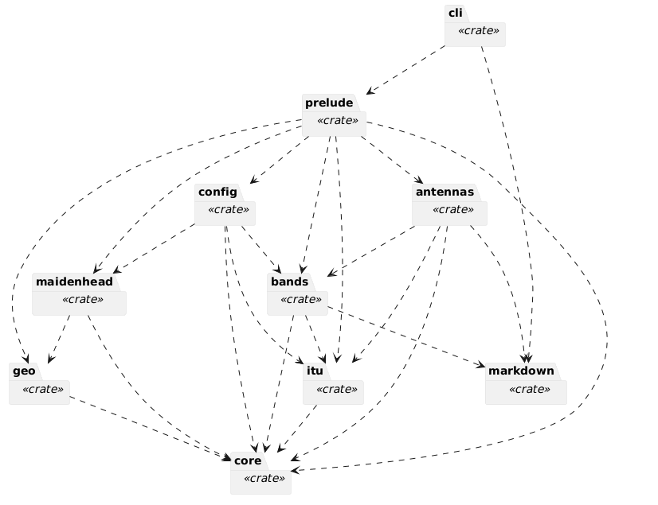
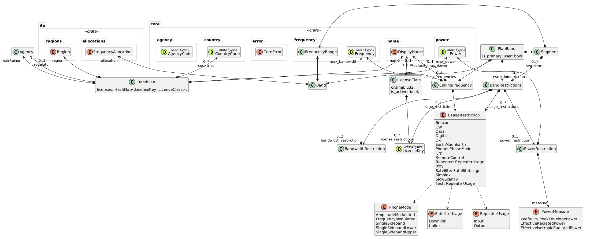
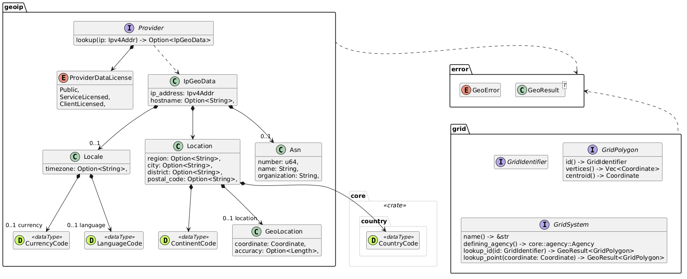
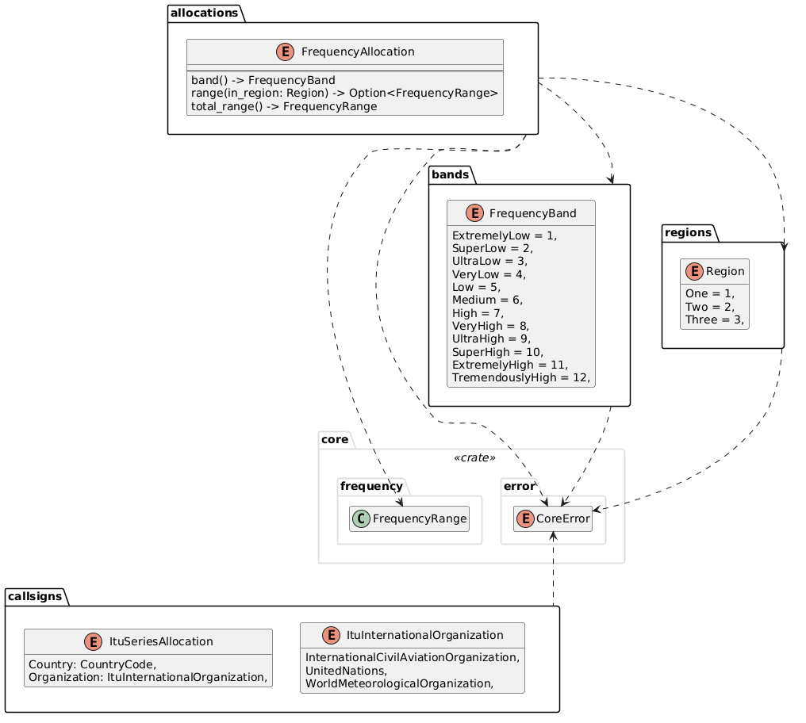
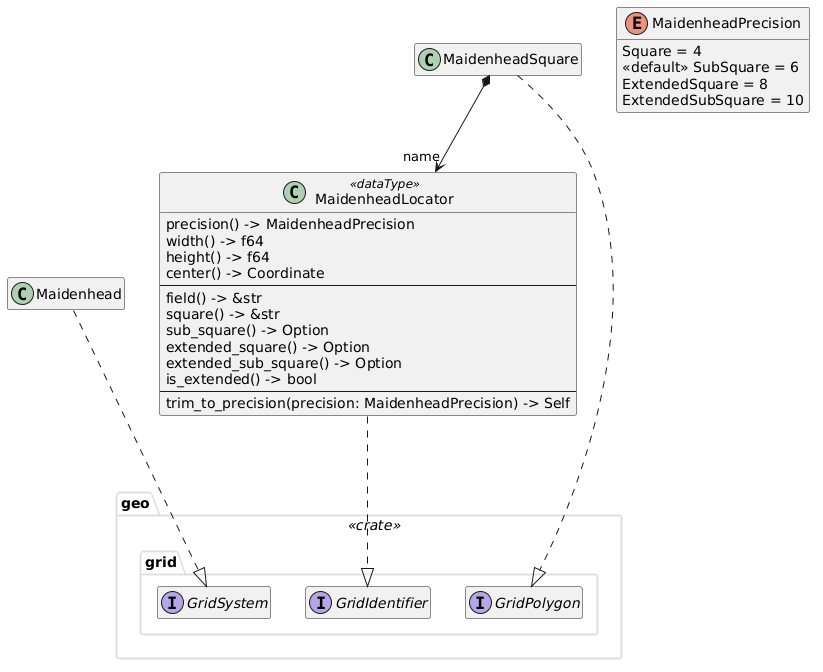

Introduction
The RF-Ham project aims to provide a set of Rust crates that provide types and functions for key Ham planning and operating tasks.
Rf-Ham Crates

Crate rfham-antennas
TBD
Crate rfham-bands
TBD

Plan
TBD
Restrictions
TBD
Crate rfham-cli
TBD
Crate rfham-core
TBD

Units of Measure
Frequency
Wavelength
Power
FeetAndInches
Standard
ISO-3166-1 Country Code
ITU Callsign
Agency structure
Crate rfham-geo
TBD

GeoIP Traits
GeoIP Data
Grid Traits
Crate rfham-core
TBD

Frequencies
Regions
Callsigns
Crate rfham-maidenhead
TBD

Maidenhead Grid
Crate rfham-markdown
TBD
Crate rfham (prelude)
TBD
RF-Ham CLI
The RF-Ham command-line interface (CLI) is named rfham and provides immediate access to various
useful capabilities provided by the library crates. The rfhman tool is invoked with one or more
nested commands, each having a set of arguments for operation.
Command tree
antennalength
band-planitulistshow
call-signvalidatelookup
completionsconfiginitshow
Common Arguments
TBD
Output
TBD
Color
Verbosity
Antenna Commands
Length Calculations -- length
❯ rfham antenna length --band 6m --country US
# Classic 6m single-band dipole antenna.
~~~text
|<────────────────── λ/2 = 2.883 meters ───────────────────>|
|<─── λ/4 = 1.441 meters ───>| |<─── λ/4 = 1.441 meters ───>|
──────────────────────────────┳──────────────────────────────
⎅ 1:1 balun
│ ∧
│ │ λ/2 = 2.883 meters
│ │ 50Ω feed line
│ │
│ ∨
└┄┄┄ > to transceiver
~~~
Notes:
1. Frequency range for 6m band is 50.000 MHz - 54.000 MHz.
1. From the *US Amateur Radio Bands* by The American Radio Relay League (ARRL).
2. Mid-point of band is 52.000 MHz.
3. Wavelength of mid-point is 5.765 m.
4. Half-wave length is λ/2 = 2.883 meters for overall antenna.
5. Quarter-wave length is λ/4 = 1.441 meters for each antenna pole.
6. Include a 1:1 Current **Balun**, often called a 1:1 *Choke* or *Line Isolator*.
Band-Plan Commands
ITU Allocations -- itu
❯ rfham band-plan itu
# IARU/ITU Frequency Allocations
| | | Region 1 | | Region 2 | | Region. 3 | |
| Name | Band | Start | End | Start | End | Start | End |
| ----- | ----- | ---------: | ---------: | ---------: | ---------: | ---------: | ---------: |
| 2200m | LF | 0.1357 MHz | 0.1378 MHz | 0.1357 MHz | 0.1378 MHz | 0.1357 MHz | 0.1378 MHz |
| 630m | MF | 0.472 MHz | 0.479 MHz | 0.472 MHz | 0.479 MHz | 0.472 MHz | 0.479 MHz |
| 160m | MF | 1.81 MHz | 2 MHz | 1.8 MHz | 2 MHz | 1.8 MHz | 2 MHz |
| 80m | HF | 3.5 MHz | 3.8 MHz | 3.5 MHz | 4 MHz | 3.5 MHz | 3.9 MHz |
| 60m | HF | 5.3515 MHz | 5.3665 MHz | 5.3515 MHz | 5.3665 MHz | 5.3515 MHz | 5.3665 MHz |
| 40m | HF | 7 MHz | 7.3 MHz | 7 MHz | 7.3 MHz | 7 MHz | 7.3 MHz |
| 30m | HF | 10.1 MHz | 10.15 MHz | 10.1 MHz | 10.15 MHz | 10.1 MHz | 10.15 MHz |
| 20m | HF | 14 MHz | 14.35 MHz | 14 MHz | 14.35 MHz | 14 MHz | 14.35 MHz |
| 17m | HF | 18.068 MHz | 18.168 MHz | 18.068 MHz | 18.168 MHz | 18.068 MHz | 18.168 MHz |
| 15m | HF | 21 MHz | 21.45 MHz | 21 MHz | 21.45 MHz | 21 MHz | 21.45 MHz |
| 12m | HF | 24.89 MHz | 24.99 MHz | 24.89 MHz | 24.99 MHz | 24.89 MHz | 24.99 MHz |
| 10m | HF | 28 MHz | 29.7 MHz | 28 MHz | 29.7 MHz | 28 MHz | 29.7 MHz |
| 6m | VHF | 50 MHz | 54 MHz | 50 MHz | 54 MHz | 50 MHz | 54 MHz |
| 2m | VHF | 144 MHz | 148 MHz | 144 MHz | 148 MHz | 144 MHz | 148 MHz |
| 1.25m | VHF | - | - | 220 MHz | 230 MHz | - | - |
| 70cm | UHF | 430 MHz | 440 MHz | 430 MHz | 440 MHz | 430 MHz | 440 MHz |
| 33cm | UHF | - | - | 902 MHz | 928 MHz | - | - |
| 23cm | UHF | 1240 MHz | 1300 MHz | 1240 MHz | 1300 MHz | 1240 MHz | 1300 MHz |
| 13cm | UHF | 2300 MHz | 2450 MHz | 2300 MHz | 2450 MHz | 2300 MHz | 2450 MHz |
| 9cm | SHF | 3300 MHz | 3500 MHz | 3300 MHz | 3500 MHz | 3300 MHz | 3500 MHz |
| 5cm | SHF | 5650 MHz | 5850 MHz | 5650 MHz | 5925 MHz | 5650 MHz | 5850 MHz |
| 3cm | SHF | 10000 MHz | 10500 MHz | 10000 MHz | 10500 MHz | 10000 MHz | 10500 MHz |
| 1.2cm | SHF | 24000 MHz | 24250 MHz | 24000 MHz | 24250 MHz | 24000 MHz | 24250 MHz |
| 6mm | EHF | 47000 MHz | 47200 MHz | 47000 MHz | 47200 MHz | 47000 MHz | 47200 MHz |
| 4mm | EHF | 76000 MHz | 81500 MHz | 76000 MHz | 81500 MHz | 76000 MHz | 81500 MHz |
| 2.5mm | EHF | 122250 MHz | 123000 MHz | 122250 MHz | 123000 MHz | 122250 MHz | 123000 MHz |
| 2mm | EHF | 134000 MHz | 141000 MHz | 134000 MHz | 141000 MHz | 134000 MHz | 141000 MHz |
| 1mm | EHF | 241000 MHz | 250000 MHz | 241000 MHz | 250000 MHz | 241000 MHz | 250000 MHz |
For more information, see:
* [Amateur and Amateur-satellite Service Spectrum](https://www.iaru.org/wp-content/uploads/2020/01/Amateur-Services-Spectrum-2020_.pdf), IARU 2020.
* [Regions](https://www.iaru.org/about-us/organisation-and-history/regions/), IARU.
List Band Plans -- list
❯ rfham band-plan list
# Configured/Known Band Plans
| Country | Plan Name | Region |
| -------- | ------------------------------ | -------- |
| UK | UK Amateur Radio Band Plan | 1 |
| US | US Amateur Radio Band Plan | 2 |
Show Band Plan -- show
Show a given country's band plan
Usage: rfham band-plan show [OPTIONS] <COUNTRY>
Arguments:
<COUNTRY> Show the band plan for this country [env: RFHAM_COUNTRY=]
Options:
-b, --band <BAND> Show only this band
-v, --verbose... Increase logging verbosity by one level per occurance
-q, --quiet... Decrease logging verbosity by one level per occurance
--color <WHEN> Controls when to use color [default: auto] [possible values: auto, always, never]
-h, --help Print help
❯ rfham band-plan --band 6m US
# US Amateur Radio Bands
* Regulatory Agency: [Federal Communications Commission (FCC)](https://www.fcc.gov)
* Maintaining Agency: [The American Radio Relay League (ARRL)](http://www.arrl.org)
* Region: IARU/ITU Region 2
* Countries: US
* Default maximum power: 1500 W
Notes:
* An amateur station must use the minimum transmitter power necessary to carry out the desired communications.
## License Classes
0. Novice (N) inactive class
1. Technician (T)
2. General (G)
3. Advanced (A) inactive class
4. Amateur Extra (E)
## 6m Band (50 MHz - 54 MHz)
Note: amateur operators are the primary users on this band.
Band restrictions:
| Start | End | License Class | Usage/Mode | Power | Max Bandwidth |
| ---------: | ---------: | -------------- | -------------------- | -------------- | -------------- |
| 50 MHz | 50.1 MHz | any | CW only | full power | - |
| 50.1 MHz | 54 MHz | any | any | full power | - |
Callsign Commands
Validate -- validate
❯ rfham call-sign validate K7SKJ/AG
Callsign "K7SKJ/AG" **is** valid:
* Prefix: K
* ITU allocation; Country: US
* Separator Numeral: 7
* Suffix: SKJ
* is special: false
* Ancillary Suffix: AG
* is portable: false
* is mobile: false
* is aeronautical mobile: false
* is maritime mobile: false
* is at alternate location: false
* is operating QRP: false
* FCC license pending: **true**
Lookup Details -- lookup
TBD
❯ rfham call-sign lookup K7SKJ
# Callsign K7SKJ
* Alias: KM7ABD
Registered to Simon K Johnston [johnstonskj@gmail.com](mailto:johnstonskj@gmail.com).
## License
* Class **t**
* Codes **HVIE**
* Effective date: **2025-05-28**
* Expiration date: **2035-05-28**
## Mailing Address
> Atten; Simon Johnston \
> 2406 171st Ave SE \
> Bellevue \
> King \
> WA \
> 98008-5523 \
> United States
## Other Location Information
* DXCC Entity ID: 291 (United States)
* DXCC Mailing Entity ID: 271
* Grid locator [CN87wo](https://k7fry.com/grid/?qth=CN87wo)
* Geographic Location [47° 35′ 19.643999″, -122° 6′ 44.279999″](https://www.google.com/maps?q=47.58879,-122.1123)
Data sourced from the qrz.com XML API. Location source was geo-coded from the address.
Completions Command
Config Commands
TBD
Configuration File Location
TBD
Initialization -- init
❯ rfham config init --config-file ./ex.toml --interactive K7SKJ
Hi K7SKJ, let's build a new configuration together ...
✓ What is your name? Simon Johnston
⊢ Using the country code derived from your callsign: 'US'
✓ What country are you in? US
⊢ Using the latitude/logitude derived from your IP address: '47.97900000, -122.20210000'
✓ What is your grid square? CN87vx
✓ Do you want to add a mailing address? No
✓ Do you want to set locale-specific defaults? Yes
✓ Use which units for length? imperial
✓ Use which units for temperature? imperial
✓ Use which format for time? military
✓ Do you want to add any equipment records? No
✓ Do you want to connect to any web services? Yes
✓ Do you have an account on qrz.com for callsign lookup? Yes
✓ Qrz user name? K7SKJ
✓ Password: ********
✓ Are you sure you wish to write this configuration? Yes
✓ Configuration file saved as "./ex.toml"
Current Configuration -- show
❯ rfham config show
# Current Configuration
* Path to file: "/Users/skj/.config/rfham/rfham-config.toml"
## Locale
* Length Units: imperial
* Temperature Units: imperial
* Time Format: military
## Station
* Callsign: K7SKJ
* ITU allocation; Country: US
* Operator name: Simon Johnston
### Location
* Grid locator: CN87WO61
* ITU region: 2
* Country: US
## Services
* Credential storage: plain-text
### Credentialed Services
* **qrz-api** for K7SKJ
Current Configuration Field Access
Adding a config path to the end of the show command will retrieve only the specified field
by traversing each name in the path as a field from the file root. So the station component is
referenced as station, the call-sign field within this component is station.call-sign.
The following retrieves the Maidenhead grid locator configured for the station.
❯ rfham config show station.location.grid-locator
field: grid-locator
type: string
value: "CN87WO61"
The flag -c or --compact will display the same information is a compact format of the form
name : type = value. This provides a more easily machine-readable format for extensions.
❯ rfham config show --compact station.location.grid-locator
grid-locator: string = "CN87WO61"
If the field requested is optional, but not present, the following is returned.
❯ rfham config show station.location.mailing-address
field mailing-address is not set
If however any name is not valid for the preceding component an error is returned.
❯ rfham config show station.location
🛑 Error: the config path name `location` expected additional path elements
└── 🔎 Component `station`
└── ℹ️ Help Possible names: call-sign, operator-name, location
Similarly, if a component is selected by there are no more elements in the path the overall path is invalid as not field can be selected.
❯ rfham config show station
🛑 Error: the config path name `station` expected additional path elements
└── 🔎 Component `<<root>>`
└── ℹ️ Help Possible names: call-sign, operator-name, location
Finally, if a component is selected but there are no more elements in the path the overall path is invalid as not field can be selected.
❯ rfham config show station.name
🛑 Error: the config path name `name` is not valid in the matching component
├── 🔎 Component `station`
└── ℹ️ Help Possible names: call-sign, operator-name, location
Schema
TBD
External Commands
The RF-Ham CLI supports extension in a similar manner to Git and Cargo, which is to assume any
command it does not recognize may represent an external command to run as a sub-process.
Specifically an unknown command qso would have the CLI try and execute a process rfham-qso
on the current path (PATH environment variable).
❯ cargo run qso
🛑 Error: no executable found for external command
├── 🔎 Command `qso`
└── ℹ️ Help check that the executable `rfham-qso` exists and is in $PATH
References
TBD
Services
Callsign Information
Callsign lookup services, which provide information about radio callsigns, such as the operator's name, location, and other details.
Endpoint Variables
call: The callsign to look up.
Example Endpoints
https://www.qrz.com/db/{call}(browser)https://xmldata.qrz.com/xml/current/?s={session};callsign={sign}(API)https://www.radioreference.com/db/ham/callsign/?cs={call}
Grid Lookup/Mapping
Locator mapping services, which provides visualization Maidenhead grid locators.
Endpoint Variables
loc: The Maidenhead grid locator to visualize.
Example Endpoints
https://k7fry.com/grid/?qth={loc}https://lcbsweden.com/www-sm7lcb/maps/qso_map/findlocator/index.html?{loc};
Logging
Logging services, which provide a way to log radio contacts and other information.
Geo Location
IP geolocation services, which provide the geographic location of an IP address.
Endpoint Variables
ip: The IP address to geolocate.
Weather services
which provide weather information for a given location.
Space weather
Provide information about solar activity and its effects on radio propagation.
SOTA/POTA/WWFF
Which provide information about summits, parks, and other locations for radio operations.
Error Help
TBD
E001 -- InitFailure
TBD
E002 -- ConfigFileWrite
TBD
Geo/IP Services
Provider Responses
| Geo | GeoIpLookup | IPinfo free | IPinfo Lite | IPinfo Core | Maxmind Country | Maxmind City |
|---|---|---|---|---|---|---|
| continent.code | continent_code | n/a | continent_code | n/a | continent.code | continent.code |
| continent.name | continent_name | n/a | continent_name | n/a | continent.names.en | continent.names.en |
| country.code | country_code | country | country_code | country | country.code | country.code |
| country.name | country_name | n/a | country_name | n/a | country.names.en | country.names.en |
| region | region | region | n/a | region | n/a | subdivisions? |
| city | city | city | n/a | city | n/a | city.names.en |
| timezone.name | timezone_name | timezone | n/a | timezone | n/a | location.time_zone |
| postal_code | postal_code | postal | n/a | postal | n/a | postal.code |
| geo.latitude | latitude | loc | n/a | loc | n/a | location.latitude |
| geo.longitude | longitude | loc | n/a | loc | n/a | location.longitude |
| geo.accuracy | n/a | n/a | n/a | n/a | n/a | location.accuracy_radius |
Geo Ip Lookup
This uses the publicly accessible API at https://json.geoiplookup.io/{ip}.
{
"ip": "...",
"isp": "Akamai Technologies, Inc.",
"org": "Akamai Technologies, Inc.",
"hostname": "",
"latitude": 32.814,
"longitude": -96.9489,
"postal_code": "",
"city": "Irving",
"country_code": "US",
"country_name": "United States",
"continent_code": "NA",
"continent_name": "North America",
"region": "Texas",
"district": "",
"timezone_name": "America/Chicago",
"connection_type": "Corporate",
"asn_number": 16625,
"asn_org": "Akamai Technologies, Inc.",
"asn": "AS16625 - Akamai Technologies, Inc.",
"currency_code": "USD",
"currency_name": "United States Dollar",
"language_code": "en",
"language_name": "English",
"success": true,
"premium": false
}
IPInfo
Result from curl https://ipinfo.io/; legacy free API. See IPinfo APIs for comparison.
{
"ip": "...",
"hostname": "...",
"city": "...",
"region": "...",
"country": "US",
"loc": "36.1329,-94.1655",
"org": "...",
"postal": "...",
"timezone": "America/Chicago",
"readme": "https://ipinfo.io/missingauth"
}
Results from the IPInfo Lite API.
{
ip:"...",
asn:"AS701",
as_name:"Verizon Business",
as_domain:"verizonbusiness.com",
country_code:"US",
country:"United States",
continent_code:"NA",
continent:"North America"
}
Results from the IPInfo Core API.
{
ip:"...",
city:"Boston",
region:"Massachusetts",
country:"US",
loc:"42.3584,-71.0598",
postal:"02151",
timezone:"America/New_York",
asn:{
asn:"AS701",
name:"Verizon Business",
domain:"verizonbusiness.com",
route:"71.243.0.0/17",
type:"isp"
},
is_anycast:false,
is_mobile:false,
is_anonymous:false,
is_satellite:false,
is_hosting:false
}
Maxmind GeoLite Country
{
"continent": {
"code": "NA",
"geoname_id": 123456,
"names": { ... }
},
"country": {
"geoname_id": 6252001,
"is_in_european_union": false,
"iso_code": "US",
"names": { ... }
},
"registered_country": {
"geoname_id": 6252001,
"is_in_european_union": true,
"iso_code": "US",
"names": { ... }
},
"represented_country": {
"geoname_id": 6252001,
"is_in_european_union": true,
"iso_code": "US",
"names": { ... },
"type": "military"
},
"traits": {
"ip_address": "1.2.3.4",
"is_anycast": true,
"network": "1.2.3.0/24"
}
}
Maxmind GeoLite City
{
"continent": {
"code": "NA",
"geoname_id": 123456,
"names": { ... }
},
"country": {
"geoname_id": 6252001,
"is_in_european_union": false,
"iso_code": "US",
"names": { ... }
},
"registered_country": {
"geoname_id": 6252001,
"is_in_european_union": true,
"iso_code": "US",
"names": { ... }
},
"represented_country": {
"geoname_id": 6252001,
"is_in_european_union": true,
"iso_code": "US",
"names": { ... },
"type": "military"
},
"traits": {
"ip_address": "1.2.3.4",
"is_anycast": true,
"network": "1.2.3.0/24",
"autonomous_system_number": 1239,
"autonomous_system_organization": "Linkem IR WiMax Network",
"connection_type": "Cable/DSL",
"domain": "example.com",
"isp": "Linkem spa",
"mobile_country_code": "310",
"mobile_network_code": "004",
"organization": "Linkem IR WiMax Network"
},
"city": {
"geoname_id": 54321,
"names": { ... }
},
"location": {
"accuracy_radius": 20,
"latitude": 37.6293,
"longitude": -122.1163,
"metro_code": 807,
"time_zone": "America/Los_Angeles"
},
"postal": {
"code": "90001"
},
"subdivisions": [
{
"geoname_id": 5332921,
"iso_code": "CA",
"names": { ... }
}
]
}
Callsign Services
Qrz.com Notes
❯ curl 'https://xmldata.qrz.com/xml/current/?username=K7SKJ;password=...;agent=RF-Ham-1.0'
<?xml version="1.0" encoding="utf-8" ?>
<QRZDatabase version="1.36" xmlns="http://xmldata.qrz.com">
<Session>
<Key>db5137fe6bb5310fb2cd9b07a1fa04ea</Key>
<Count>14</Count>
<SubExp>Mon May 8 20:16:30 2028</SubExp>
<GMTime>Sat May 9 20:20:10 2026</GMTime>
<Remark>cpu: 0.013s</Remark>
</Session>
</QRZDatabase>
❯ curl 'https://xmldata.qrz.com/xml/current/?s=...;callsign=K7SKJ'
<?xml version="1.0" encoding="utf-8" ?>
<QRZDatabase version="1.36" xmlns="http://xmldata.qrz.com">
<Callsign>
<call>K7SKJ</call>
<aliases>KM7ABD</aliases>
<dxcc>291</dxcc>
<attn>Simon Johnston</attn>
<fname>Simon K</fname>
<name>Johnston</name>
<addr1>2406 171st Ave SE</addr1>
<addr2>Bellevue</addr2>
<state>WA</state>
<zip>98008-5523</zip>
<country>United States</country>
<lat>47.588790</lat>
<lon>-122.112300</lon>
<grid>CN87wo</grid>
<county>King</county>
<ccode>271</ccode>
<fips>53033</fips>
<land>United States</land>
<efdate>2025-05-28</efdate>
<expdate>2035-05-28</expdate>
<class>T</class>
<codes>HVIE</codes>
<email>johnstonskj@gmail.com</email>
<u_views>74</u_views>
<bio>0</bio>
<biodate>2025-04-16 18:02:31</biodate>
<moddate>2025-05-29 12:30:04</moddate>
<MSA>7600</MSA>
<AreaCode>425</AreaCode>
<TimeZone>Pacific</TimeZone>
<GMTOffset>-8</GMTOffset>
<DST>Y</DST>
<lotw>1</lotw>
<geoloc>geocode</geoloc>
<name_fmt>Simon K Johnston</name_fmt>
<serial>2665177</serial>
</Callsign>
<Session>
<Key>db5137fe6bb5310fb2cd9b07a1fa04ea</Key>
<Count>15</Count>
<SubExp>Mon May 8 20:16:30 2028</SubExp>
<GMTime>Sat May 9 20:20:59 2026</GMTime>
<Remark>cpu: 0.081s</Remark>
</Session>
</QRZDatabase>
| Group | Field | Type | Rq? | K7SKJ (KM7ABD) | IR3ORCO | SP9JP |
|---|---|---|---|---|---|---|
| Key | serial | String | Y | 2665177 | 2713763 | 2008366 |
| user | Callsign | |||||
| Sign | call | Callsign | Y | 7SKJ | IR3ORCO | SP9JP |
| xref | Callsign | (KM7ABD) | ||||
| aliases | Callsign.. | KM7ABD | SP7RJA | |||
| p_call | Callsign | |||||
| DX | dxcc | u32 | Y | 291 | 248 | 269 |
| ccode | u32 | Y | 271 | 128 | 205 | |
| land | String | Y | United States | Italy | Poland | |
| Name | fname | String | Y | Simon K | Ari | Jurek |
| name | String | Y | Johnston | Udine | Polczynski | |
| nickname | String | |||||
| name_fmt | String | Y | Simon K Johnston | Ari Udine | Jurek Polczynski | |
| Address | attn | String | Simon Johnston | |||
| addr1 | String | 2406 171st Ave SE | via Diaz 58 | e-mail me to get full address | ||
| addr2 | String | Bellevue | UDINE | Krakow | ||
| state | String | U | WA | |||
| fips | String | U | 53033 | |||
| county | String | U | King | |||
| zip | String | 98008-5523 | 33100 | |||
| country | String | Y | United States | Italy | Poland | |
| Location | lat | Latitude | 47.588790 | 46.061667 | 50.041964 | |
| long | Longitude | -122.112300 | 13.206667 | 19.918086 | ||
| grid | Locator | CN87wo | JN66ob | JO90xb | ||
| cqzone | u32 | 15 | 15 | |||
| ituzone | u32 | 28 | 28 | |||
| geoloc | enum | Y | geocode | user | user | |
| MSA | u32 | U | 7600 | |||
| AreaCode | u32 | U | 425 | |||
| iota | String | |||||
| License | efdate | Date | U | 2025-05-28 | ||
| expdate | Date. | U | 2035-05-28 | |||
| class | String | T | A | |||
| codes | String | U | HVIE | |||
| QSL | qslmgr | String | LoTW preffered, ... | |||
| eqsl | 0/1 | 1 | ||||
| mqsl | 0/1 | 1 | ||||
| lotw | 0/1 | 1 | 1 | |||
| Contact | String | johnstonskj@gmail.com | sp9jp@polczynski.com | |||
| Personal | u_views | String | 74 | 121407 | 68024 | |
| bio | u32 | 0 | 1121 | 7556 | ||
| biodate | DateTime | 2025-04-16 18:02:31 | 2026-04-24 10:33:55 | 2025-04-02 15:04:45 | ||
| moddate | DateTime | 2025-05-29 12:30:04 | 2026-03-16 21:40:10 | 2019-06-29 09:42:48 | ||
| image | Url. | url... | url... | |||
| imageinfo | String | 355:551:251165 | 212:323:31074 | |||
| born | u32 | 1971 | ||||
| TimeZone | TimeZone | String | U | Pacific | ||
| GMTOffset | String | -8 | ||||
| DST | Y/N | Y |
<?xml version="1.0" ?>
<QRZDatabase version="1.34">
<Session>
<Error>Not found: g1srdd</Error>
<Key>1232u4eaf13b8336d61982c1fd1099c9a38ac</Key>
<GMTime>Sun Nov 16 05:07:14 2003</GMTime>
</Session>
</QRZDatabase>